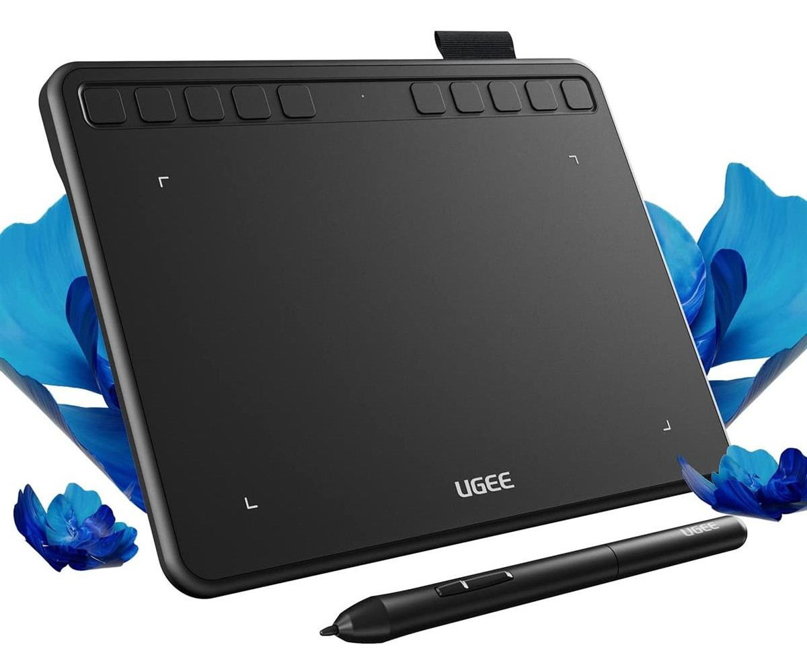
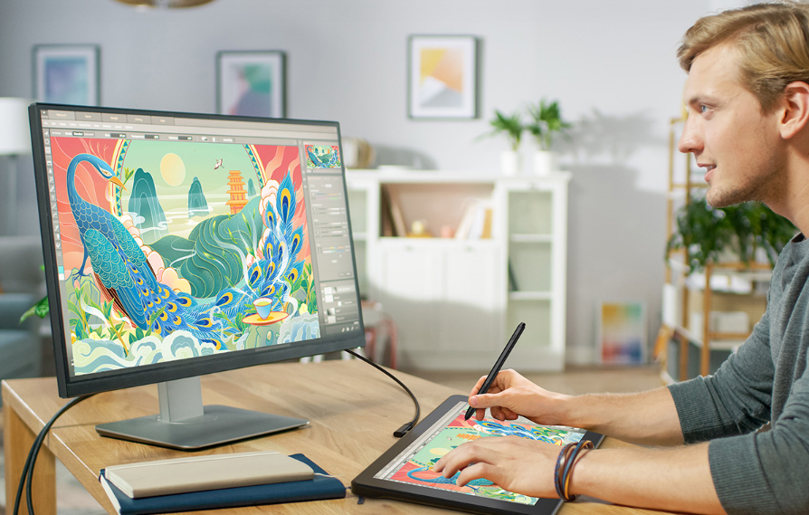
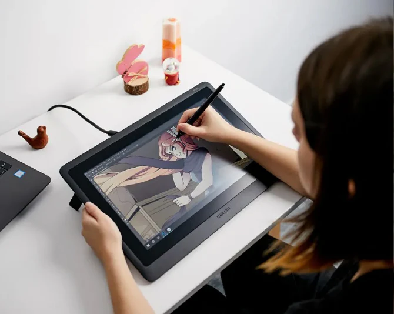

Про графічні планшети
Графічний планшет - це зручний пристрій для малювання на комп'ютері, який став незамінним помічником для сучасних художників та дизайнерів. На відміну від миші, він передає найменші нюанси руху стилуса: силу натиску, швидкість проведення лінії та кут нахилу, що дозволяє досягти анатомічної точності в малюнку.
Першим прототипом сучасного планшета вважається «Телеавтограф», запатентований Елішою Греєм ще у 1888 році. Проте справжня революція відбулася у 1957 році, коли Том Діамонд представив Stylator - перший пристрій, що розпізнавав рукописне введення за допомогою пера. Пізніше, у 1964 році, з'явився знаменитий RAND Tablet, який став основою для комерційних дигітайзерів. Сучасний вигляд галузі сформувала японська компанія Wacom, яка у 1980-х роках першою запатентувала бездротове перо на основі електромагнітного резонансу, звільнивши художників від незручних дротів.
Основні типи планшетів

Планшети без екрану
Найпоширеніший варіант для навчання та роботи з графікою. Зображення відображається на моніторі комп’ютера, а користувач малює на окремій поверхні планшета.
Такі моделі легкі, компактні та доступні за ціною. Вони підходять для обробки фото, створення векторної графіки та базового цифрового малювання.

Планшети з дисплеєм
Мають вбудований екран, на якому користувач малює безпосередньо стилусом. Це створює відчуття роботи з папером або полотном.
Такі моделі забезпечують більшу точність і зручність, особливо під час роботи з деталями. Вони часто використовуються професійними ілюстраторами та концепт-художниками.

Автономні планшети
Мають вбудований екран, на якому користувач малює безпосередньо стилусом. Це створює відчуття роботи з папером або полотном.
Такі моделі забезпечують більшу точність і зручність, особливо під час роботи з деталями. Вони часто використовуються професійними ілюстраторами та концепт-художниками.
Як обрати планшет
Розмір робочої області
Обирайте формат Medium (A5) як універсальний варіант. Малий розмір (S) зручний для ретуші, а великий (L) для розмашистих мазків від ліктя.
Чутливість пера (LPI та рівні натиску)
Сучасний стандарт це 8192 рівня. Також зверніть увагу на роздільну здатність (LPI): чим вона вища, тим плавнішими будуть ваші лінії без "сходинок".
Швидкість відгуку (RPS/PPS)
Цей параметр визначає, чи буде курсор "доганяти" ваше перо. Для комфортної роботи показник має бути не менше 200-220 одиниць.
Тип покриття
Обирайте моделі з ламінованим склом або текстурованим пластиком. Це створює ефект "тертя об папір", запобігаючи ковзанню пера.